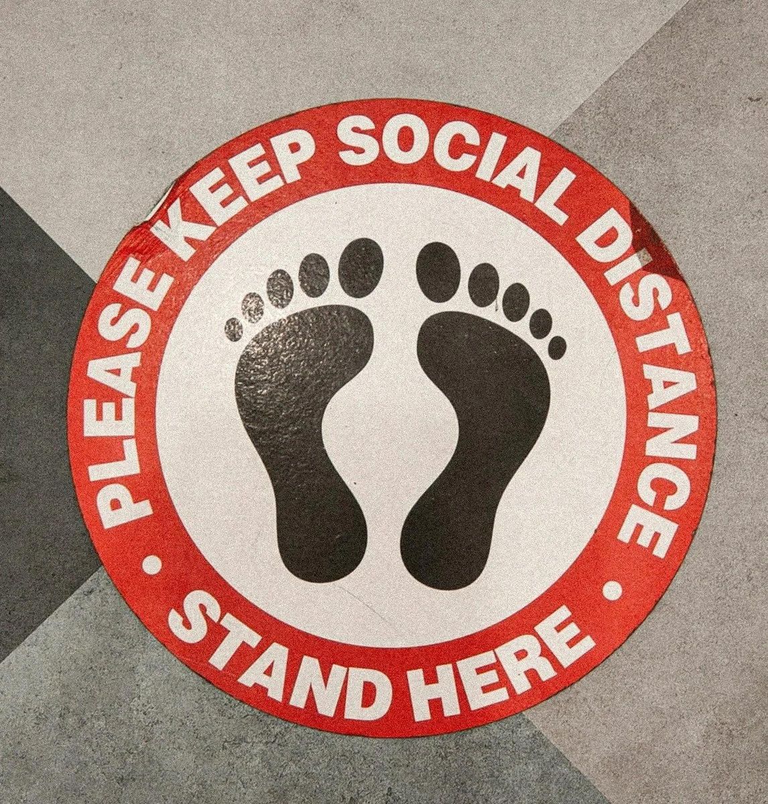

Publication sur X
Six ans après le confinement. Les travailleurs qui ont tenu le pays
Date de publication sur X · 30 mars 2026
Repères éditoriaux
Nous avons rappelé le rôle des travailleurs restés en première ligne pendant le confinement et posé la question de la reconnaissance de leur travail.
Texte de la publication sur X
30 mars 2020.
La France est confinée depuis 14 jours. Les « premiers de corvée » tiennent le pays debout. Six ans plus tard, on les a applaudis 👏 , on a fait des discours, on les a oubliés.
Leurs salaires n'ont pas bougé. Le virus est parti. L'exploitation est restée. https://t.co/ouzLv3VYro

Sources
PCF 79 · @79Parti sur X · AR-0005-TW-2038483376127017004
À lire aussi · Le 23 avril à Niort, une nouvelle mobilisation contre la réforme de l’assurance chômage